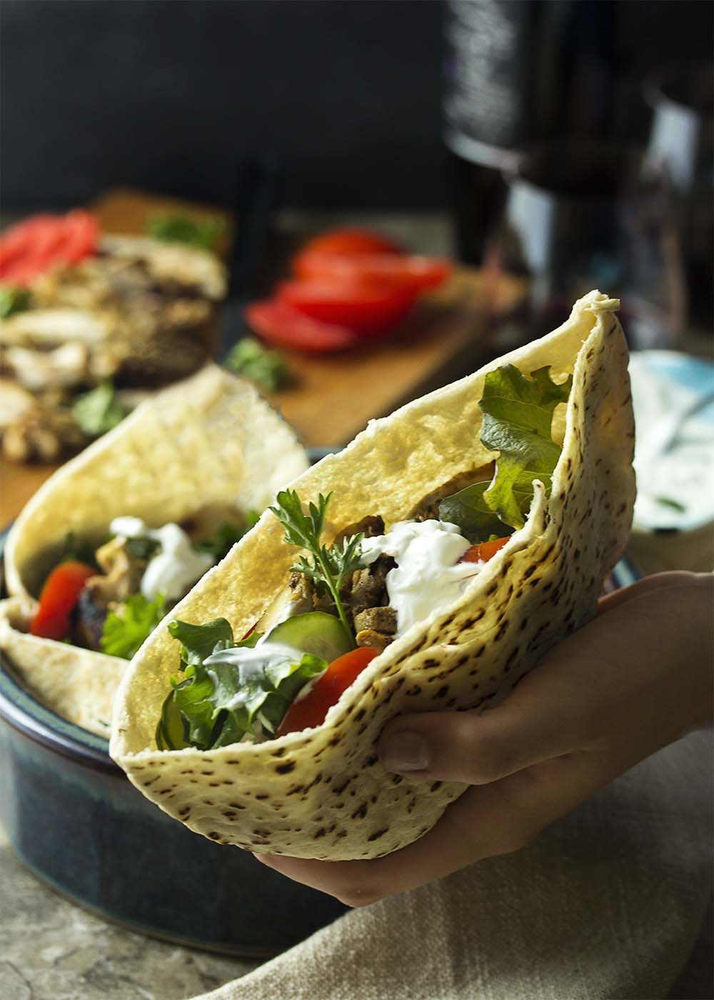
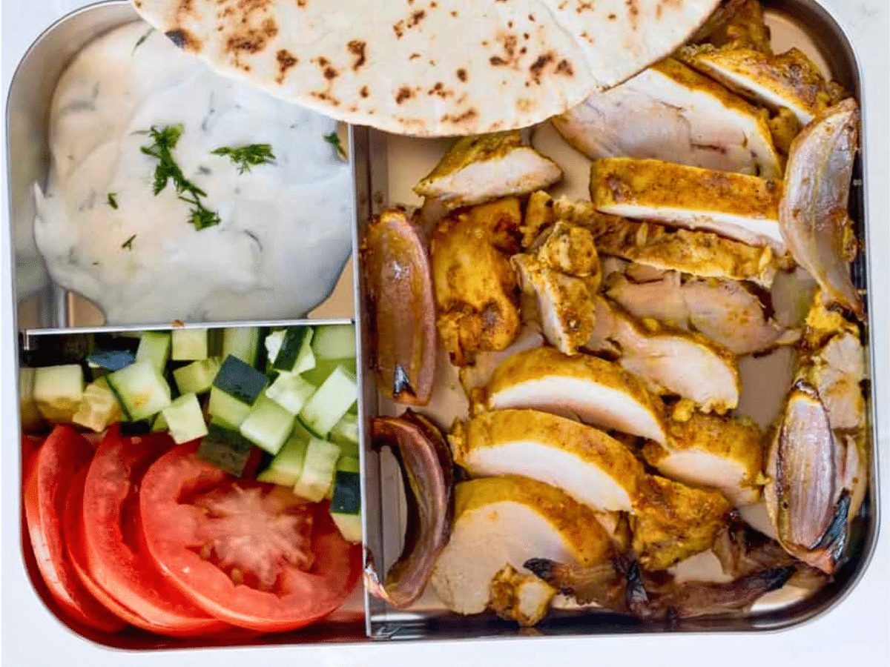
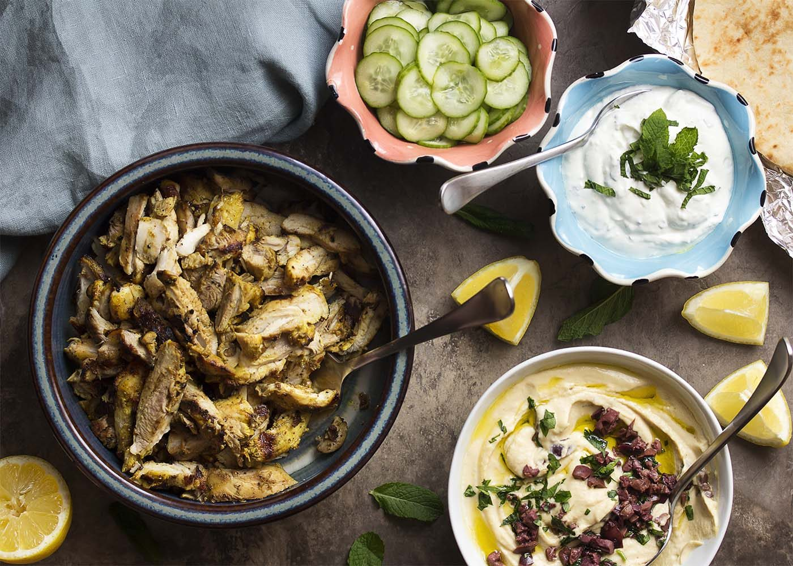
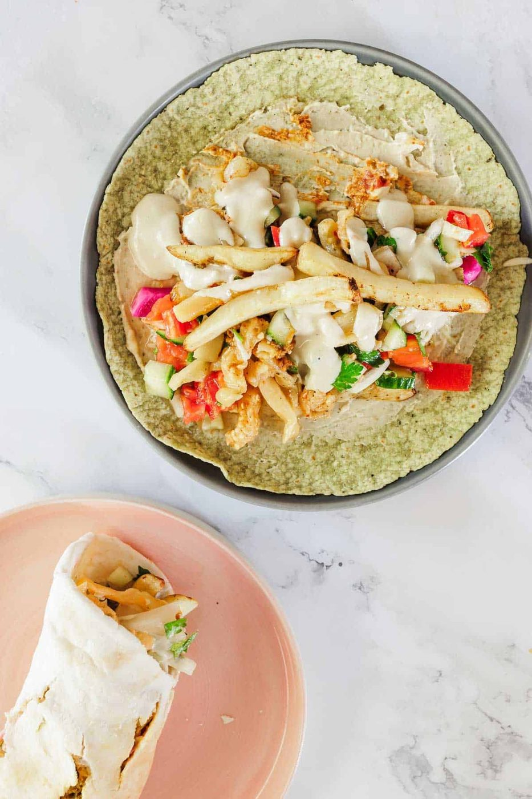
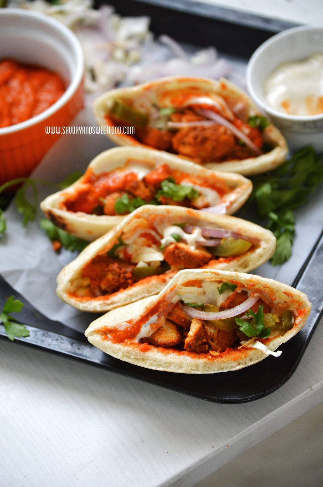
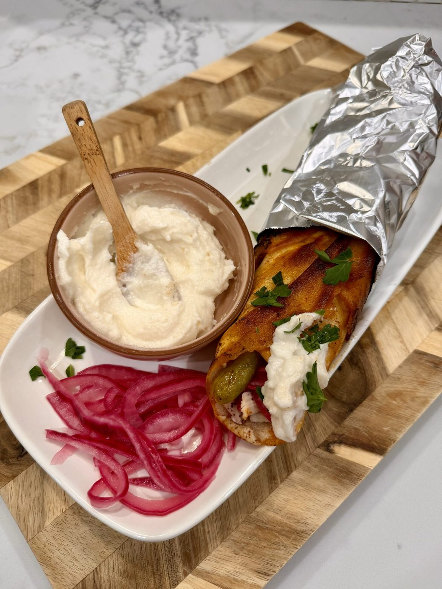
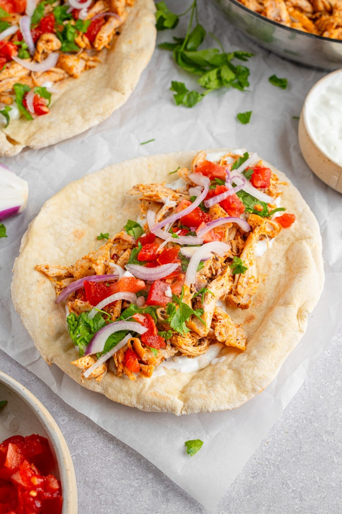

← Spice Route
Chicken Shawarma
The vertical spit's greatest hits, adapted for a humble sheet pan — yogurt, turmeric, seven spices, one addictive garlic sauce.
The vertical spit's greatest hits, adapted for a humble sheet pan — yogurt, turmeric, seven spices, one addictive garlic sauce.
Shawarma is a Levantine word for the vertical rotating spit — the Turkish döner's cousin — where marinated meat shaves off in crispy ribbons. Home ovens can't spin a spit, but a screaming-hot sheet pan gets close: thigh meat, deeply spiced, roasted until the edges blacken and caramelize.
Two components make it real. First, the marinade: yogurt tenderizes while turmeric, cumin, cardamom, allspice and a pinch of cinnamon take care of everything else — overnight is transformative, 4 hours acceptable. Second, toum, the Lebanese garlic sauce that is just garlic, oil, lemon and emulsion physics. Shawarma without toum is a jacket without sleeves.
serves 4 — tick items off as you shop; it saves as you go
Every tool this recipe leans on — click any tool for its full story. The whole catalog lives on the Tool Wall.
the marinade is seven layers deep
fake the spit: stack the meat, roast hot, then broil
the stacked tower roasts right on it
the final crisp in its own fat
shave it thin like the street vendors do
Whisk marinade, coat the thighs thoroughly, refrigerate at least 4 hours, best overnight. The yogurt works slowly; respect its schedule.
Toss sliced onion with vinegar, sugar, salt. Thirty minutes turns it candy-pink and sharp-sweet. It keeps a week and improves everything it touches.
Spread thighs in one layer on a foil-lined sheet pan. 230°C / 450°F for 25-30 minutes until edges char in spots. Rest 5 minutes, then slice thin across the grain — the shaved-ribbon look that makes it shawarma.
Spread the sliced meat back on the pan and broil 3 minutes. The little crispy edges are what the spit-man carves first — claim them.
Warm the flatbread, spread toum generously, add meat, pickled onion, tomato and cucumber. Roll tight. Or serve as a plate over rice — the wrap is tradition, the plate is lunch tomorrow.







Images are web-sourced via image search and self-hosted. Original sources:
https://z-cdn.chatglm.cn/image-search-mcp/images-ppt/0109b3154ad1.jpeghttps://z-cdn.chatglm.cn/image-search-mcp/images-ppt/2d49c2252186.pnghttps://z-cdn.chatglm.cn/image-search-mcp/images-ppt/36ea21968064.jpeghttps://z-cdn.chatglm.cn/image-search-mcp/images-ppt/41ffb355bf3e.jpghttps://z-cdn.chatglm.cn/image-search-mcp/images-ppt/7449b6802413.jpghttps://z-cdn.chatglm.cn/image-search-mcp/images-ppt/b6a8c7fab2cb.jpghttps://z-cdn.chatglm.cn/image-search-mcp/images-ppt/c198d6f24371.jpgVerified working videos — click a card to load the embed.


The dish at a glance — twelve field notes for the collectors.
Powered by GitHub Issues — the backup kitchen. One issue per recipe; your comment lands in the repo.
Same idea, two empires: the rotating shaved roast (Ottoman) versus the lemon-oregano skewer (Greek).

If this one works for you, the neighbors probably will too.

the street-wrap family: one plants, one shaves
yogurt-and-spice marinade logic, two empires